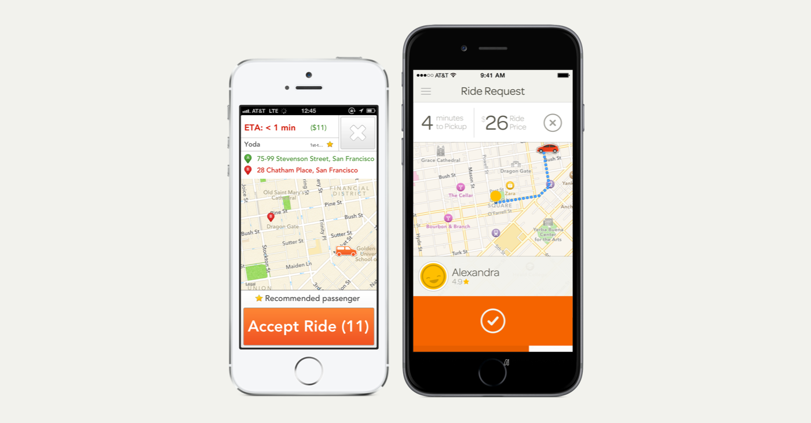

The driver app, in my opinion, is one of the coolest pieces of software that we at Sidecar have produced. In the background, the amount of optimization the team has done to efficiently match people and packages paired with the robust mobile apps makes it the mobile product I'm the most proud of working on.
That being said, it hasn't always been the best product out there. Below, I'll try to give you a glimpse how this ugly duckling became a foundational element to the Sidecar story.
The original Sidecar Drive app. Circa 2013. Not my best showing.
Not pretty, right? Sidecar Drive 1.0, designed on a single piece of looseleaf paper, worked surprisingly well for about two years but was a disaster waiting to happen. Any new feature would immediately break the design paradigm or lack thereof. Thankfully, my process had grew from nothing to something so I was ready to revisit my old friend: Sidecar Drive.
As our business grew and evolved, we were limited by this app and it's rigid structure of crap. It needed to be rebuilt from the ground up. We needed a Driver app that:
With the groundwork laid out, it was time to set a timeline, figure out concrete deliverables, and start unpacking this design problem.
One of the good parts about 1.0 being out in the open for so long was that we had a good feedback from our Drivers on what was working and what wasn't.
After interviewing drivers, gathering historical data on usage, and landing on goals and priorities I grabbed a bunch of paper, a few markers, and started listening to Ratatat's LP4. It was game time.
The request screen is what a Driver uses to accept or decline a ride or delivery trip. With a lot of information (price, ETA, multiple waypoints) and only 12 seconds to make a decision, Drivers were feeling rushed and said they would love to have more time to accept. While we could've added more time that would impact Riders and the system as a whole so I tried to see if we could solve the issue in another way.
Hierarchy of information is fundamental to a good experience and to apply that to the request screen, I had to figure out what information was most important to Drivers. After a few interviews the information fell into this order:
This insight was key in laying out the screen and has helped Drivers parse information without feeling rushed. In addition to laying out information in a more presentable way, I wanted to see if there were other ways we could bend time and help Drivers not feel rushed. I knew designers have used visual tricks to make progress bars look faster than they are so I figured we could do the opposite and make it appear slower.
Top: Normal. Middle: "Sped up". Bottom: "Slowed down"